Initial settings
Created sabato 21 febbraio 2015
System tables
First of all review the tables weeks and months, they control the selection of worked hours over invoice. Set at least your actual year, for instance months from 1 to 12 and weeks from 1 to 52 (max 53).
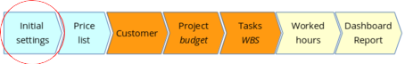
Week and months
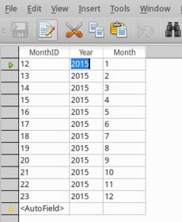
Status
Both project status and project phases are contained in the table status, review the description and notice that phases are considered from 1 to 6.
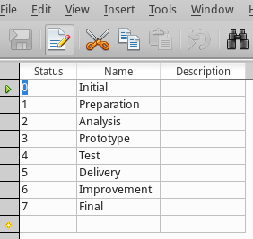
Employees
From the dashboard click on “Employees” and add at least yourself or your company information.
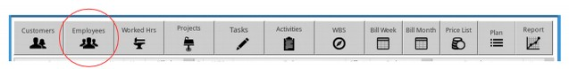
Fill the form
Fill all fields, double click to choose a picture and save. Notice that you will not have any data like productivity or projects at this stage, they will appear later when you start to record worked hours.
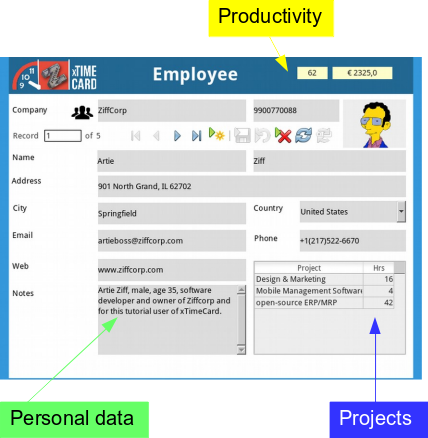
Activities
To make xTimeCard work you need to define the rate of your work, think for a while before filling values. We suggest you to set a rate that gives per day, which means times 8 an easy number to understand and remember. For instance 11,25 euro per hour means 90 euro per day.
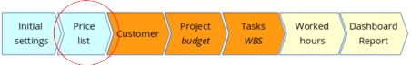
Price list
A rate is a record in the table of activities, from the dashboard click on view "Activities".
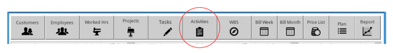
Fill the form
You will later choose this activity when you record your worked hours against a project/task, the earn value will be based on this rate.
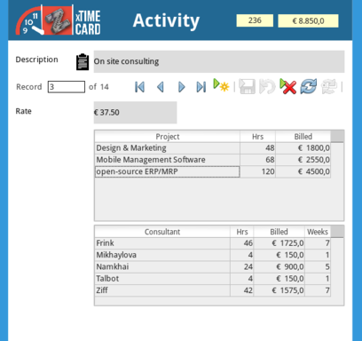
Review
You may review your rates by printing the "Price List" from the dashboard.
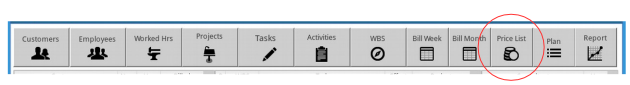
If you like to change the text and logo, it is the right time to do it, edit the report.
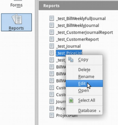
Change text or logo, save.
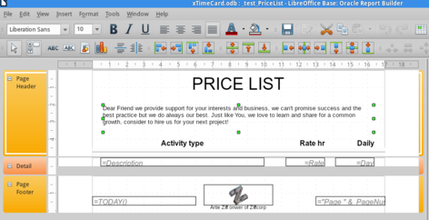
@software @xtimecard @settings
Backlinks:
Home:Software:xTimeCard:Set-up
Home:Software:xTimeCard:Usage:Employees